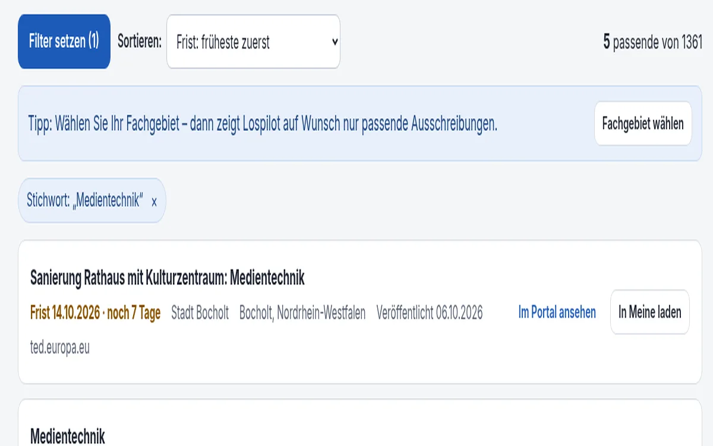
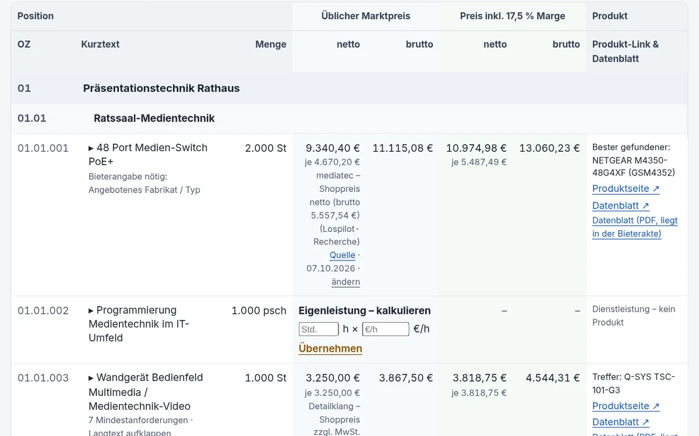
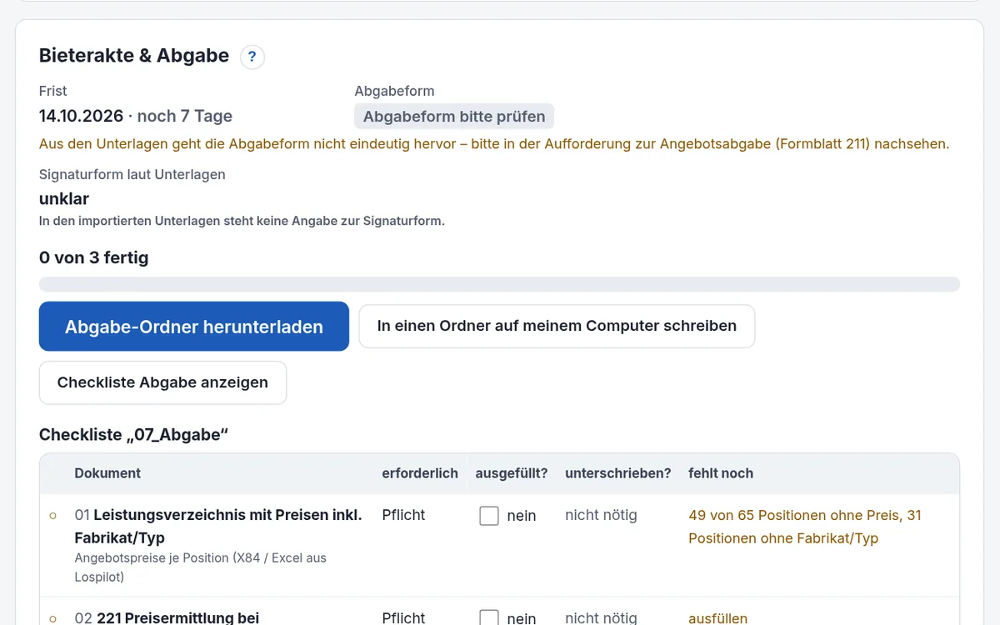
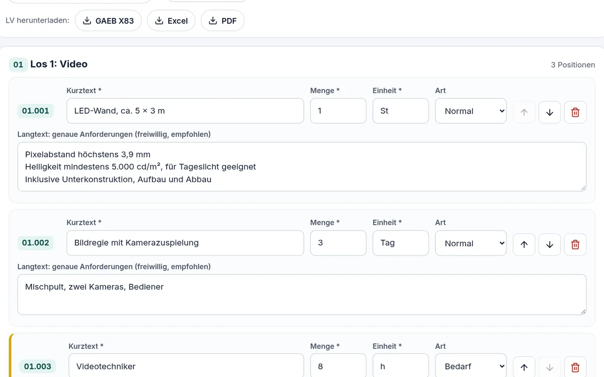
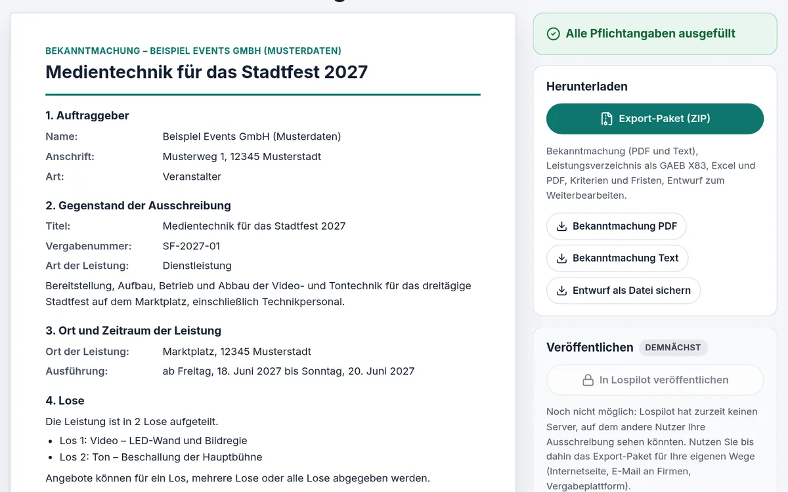

Öffentliche und private Ausschreibungen
Ausschreibungen einfach meistern –
als Bieter und als Auftraggeber.
Lospilot findet passende Ausschreibungen, liest das Leistungsverzeichnis, prüft Produkte gegen das Datenblatt und hilft beim Kalkulieren und Abgeben. Wer selbst ausschreibt, bereitet mit Lospilot Leistungsverzeichnis, Kriterien und Fristen vor.
- Ohne Anmeldung
- Ihre Daten bleiben in Ihrem Browser
- Keine Cookies, kein Tracking
Willkommen zurück! Sie haben Lospilot in diesem Browser schon genutzt – Ihre Daten sind weiter gespeichert.
Weiter zu „Meine Ausschreibungen“Was möchten Sie tun?
- Ausschreibungen aus Vergabeportalen finden
- Leistungsverzeichnis einlesen (GAEB, PDF)
- Produkte mit Datenblatt-Abgleich
- Kalkulieren, Bieterakte, Abgabe-Prüfung
- Leistung und Lose beschreiben
- Leistungsverzeichnis anlegen oder importieren
- Eignung, Zuschlag und Fristen festlegen
- Export als GAEB X83, Excel und PDF
So funktioniert’s
Zwei Wege, jeweils in vier Schritten.
Für Bieter
- Finden. Im Markt passende Ausschreibungen suchen – oder eigene Unterlagen als Ordner oder ZIP importieren.
- Auswerten. Lospilot liest das Leistungsverzeichnis, trennt Positionen, Formblätter und Pläne und schlägt Produkte vor.
- Kalkulieren. Preise, Marge, MwSt. und Eigenleistung eintragen. Export als Excel und GAEB X84.
- Abgeben. Bieterakte mit Checkliste und Abgabe-Prüfung. Das Angebot laden Sie selbst im Vergabeportal hoch.
Für Auftraggeber
- Beschreiben. Wer schreibt aus, was wird gebraucht, und soll es Lose geben?
- LV anlegen. Positionen mit Menge, Einheit und Langtext – oder ein vorhandenes LV importieren.
- Kriterien und Fristen. Eignung, Zuschlag, Angebotsfrist, Bieterfragen und Bindefrist festlegen.
- Exportieren. Bekanntmachung und LV als GAEB X83, Excel und PDF in einem ZIP. Veröffentlichen in Lospilot: demnächst.
Die wichtigsten Funktionen
Echte Ansichten aus Lospilot (Testversion): Bieter-Teil mit öffentlichen Ausschreibungen, z. B. Medientechnik im Rathaus Bocholt; Auftraggeber-Teil mit erfundenen Musterdaten.

Markt: Ausschreibungen an einem Ort
Lospilot ruft Bekanntmachungen aus mehreren Vergabeportalen ab. Sie filtern nach Fachgebiet, Ort und Frist und merken sich passende Verfahren mit einem Klick.

Leistungsverzeichnis und Produktabgleich
Jede Position mit vollem Langtext. Lospilot prüft jedes Kriterium gegen das Herstellerdatenblatt. „Treffer“ steht nur, wenn alle Kriterien belegt sind – sonst „Nächstbester Vorschlag – x von y belegt“.

Bieterakte, Checkliste und Abgabe-Prüfung
Alle Unterlagen in einer festen Ordnerstruktur, eine Checkliste für die Abgabe und Exporte als Excel, GAEB X84 und ZIP. Lospilot gibt nichts für Sie ab – Sie behalten die Kontrolle.

Ausschreibung Schritt für Schritt vorbereiten
Ein Assistent führt durch sieben kurze Schritte: Auftraggeber, Leistung, Lose, Leistungsverzeichnis, Kriterien, Fristen und Vorschau. Ihr Entwurf wird in Ihrem Browser gespeichert.

Vorschau und Export-Paket
Sie sehen die Bekanntmachung, bevor sie jemand anderes sieht. Das Export-Paket enthält Bekanntmachung, LV als GAEB X83, Excel und PDF sowie Kriterien und Fristen.
Veröffentlichen direkt in Lospilot und eingehende Angebote kommen später. Öffentliche Auftraggeber machen ab den EU-Schwellenwerten über die offiziellen Wege bekannt.
Ehrlich und sicher
Ihre Daten bleiben bei Ihnen
Ausschreibungen, Preise und Entwürfe speichert Lospilot nur in Ihrem Browser. Es gibt keinen Server für Ihre Daten.
Ohne Konto, ohne Tracking
Keine Anmeldung, keine Cookies, keine Werbe- oder Statistik-Dienste. Schriften und Programmteile kommen von dieser Seite.
Sie behalten die Kontrolle
Lospilot meldet sich in keinem Portal an, lädt nichts hoch und sendet nichts in Ihrem Namen.
Treffer nur mit Beleg
Ein Produkt heißt nur dann „Treffer“, wenn das Datenblatt alle Anforderungen belegt. Unsichere Vorschläge sind als solche markiert.
Häufige Fragen
Für Bieter
Was ist Lospilot?
Lospilot hilft Ihnen, öffentliche Ausschreibungen zu finden und Angebote vorzubereiten. Es bündelt Bekanntmachungen im Markt, lädt und sortiert Vergabeunterlagen, liest das Leistungsverzeichnis ein, recherchiert Produkte mit Datenblattprüfung und kalkuliert Preise. Außerdem erstellt es Bieterakte, Checkliste, Excel und GAEB X84. Die verbindliche Abgabe machen Sie selbst im Vergabeportal.
Gibt Lospilot mein Angebot im Vergabeportal ab?
Nein. Lospilot bereitet vor: GAEB-Datei, Excel, Formblätter, Checkliste und Bieterakte. Es meldet sich in keinem Portal an, lädt nichts hoch und gibt keine verbindliche Erklärung ab. Das Angebot laden Sie selbst im Vergabeportal hoch und senden es vor Fristende ab. Danach markieren Sie die Ausschreibung in Lospilot als „Abgegeben“.
Was bedeuten „Treffer“ und „Nächstbester“ bei den Produktvorschlägen?
Lospilot prüft jedes Kriterium aus dem LV-Text gegen das Herstellerdatenblatt: ✓ belegt, ✗ widerspricht, ? nicht angegeben. Treffer heißt, dass alle Kriterien belegt sind. Sonst steht dort „Nächstbester Vorschlag – x von y belegt“. Sie bekommen Links zu Produkt, Datenblatt und Händler, und das Datenblatt wird in der Bieterakte abgelegt. Nicht jede Position erhält einen Produktvorschlag.
Welche LV-Formate kann Lospilot einlesen?
Lospilot liest Leistungsverzeichnisse aus GAEB-Dateien (X83, D83) und aus PDF ein. Danach sehen Sie jede Position mit Menge, Langtext und Preisfeldern. Bedarfs- und Alternativpositionen trennt Lospilot vom Hauptangebot, damit sie nicht versehentlich in die Summe einfließen. Prüfen Sie bei PDF-LVs die erkannten Positionen kurz gegen das Original.
Wo werden meine Daten gespeichert?
Ihre Ausschreibungen, Kalkulationen und Bieterakten bleiben in Ihrem Browser auf Ihrem Rechner. Löschen Sie die Browserdaten oder wechseln Sie den Rechner, sind sie dort nicht mehr vorhanden. Sichern Sie Ihre Daten deshalb regelmäßig unter Einstellungen → Daten mit „Daten sichern“ als Datei. Mit „Daten laden“ stellen Sie sie wieder her.
Sind diese Antworten eine Rechtsberatung?
Nein. Die Hilfetexte von Lospilot sind allgemeine Informationen zum Vergaberecht, Stand Oktober 2026, und ersetzen keine Rechtsberatung. Maßgeblich sind immer die konkreten Vergabeunterlagen und die geltenden Gesetze von Bund und Land. Bei Fragen im Einzelfall wenden Sie sich an einen Fachanwalt für Vergaberecht, an eine Auftragsberatungsstelle oder an Ihre Kammer (IHK, HWK).
Für Auftraggeber
Kann ich meine Ausschreibung direkt in Lospilot veröffentlichen?
Noch nicht. Lospilot hat zurzeit keinen Server, auf dem andere Nutzer Ihre Ausschreibung sehen könnten. Sie können heute Ihre Ausschreibung vorbereiten: Leistung, Lose, Leistungsverzeichnis, Kriterien und Fristen. Ihren Entwurf speichert Lospilot in Ihrem Browser. Als Export-Paket (ZIP) bekommen Sie den Bekanntmachungstext und das LV als GAEB X83, Excel und PDF. Das Veröffentlichen in Lospilot kommt später.
Ich bin ein öffentlicher Auftraggeber. Ersetzt Lospilot die offizielle Bekanntmachung?
Nein. Ab den EU-Schwellenwerten ist die Bekanntmachung über die offiziellen Wege Pflicht (eForms an TED, in Deutschland über den Bekanntmachungsservice bzw. Ihre Vergabeplattform). Auch darunter gelten die Regeln von Bund und Land. Lospilot hilft beim Vorbereiten der Unterlagen und ersetzt weder die Vergabeplattform noch eine Rechtsberatung.